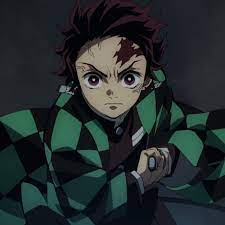
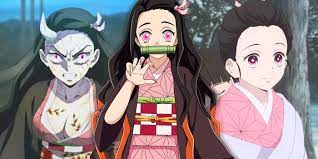
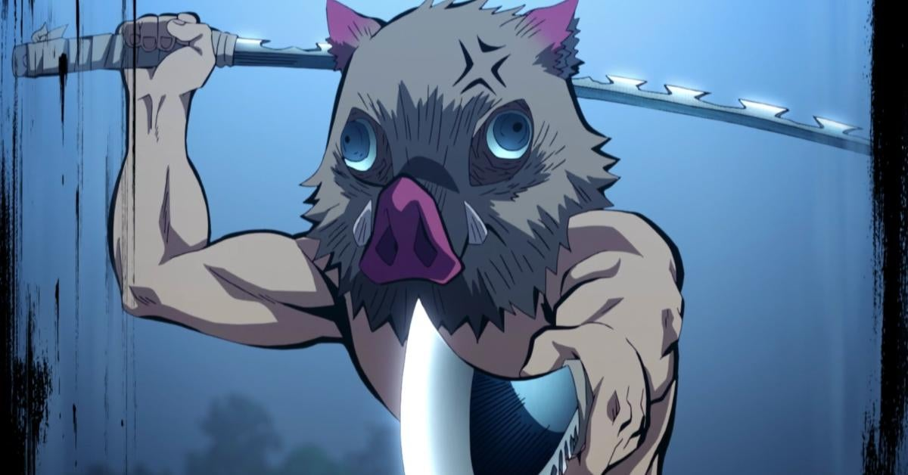
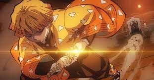

|  |  |
|  |  |
On the top left we have Tanjiro Kamado, a 15 year old boy whose family was slaughtered by demons, and his only purpose now is to find a way to turn his younger sister back into a human from a demon. On the top right we have Nezuko Kamado Tainjiro's little sister. During the attck by demons she was the sole survivor of the attack, but at a cost, she too is now a demon. On the bottom left we have Inosuke Hashibara, a demon slayer who was raised in the mountains learning the fighting stylesd of the animals that raise him. And lastly we have Zenitsu Agatsuma a fellow demon slayer who masters the power of lightning in his fighting style.